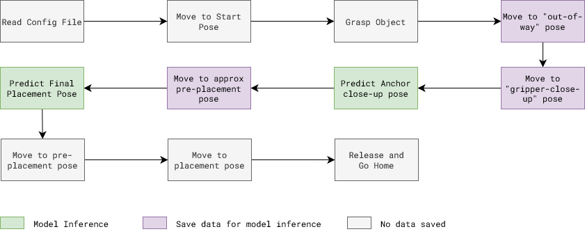
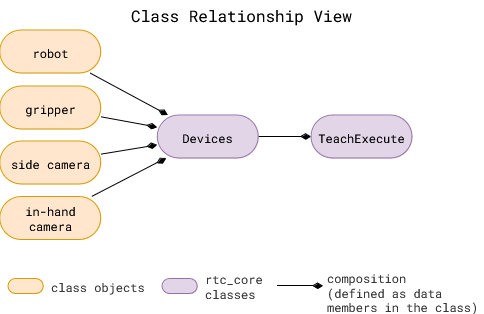

EXECUTE - Skill Execution
Method
Execution is similar to the data collection process, except robot move autonomously using saved poses from earlier and uses trained model to infer right target pose for action object.
Here is a flow diagram of execution steps involved for insertion placement task:

Code Overview

rtc_core classes: These are defined in the rtc_core folder
Devicesclass is used to define the devices used in the system. It is used to define the camera and robot used in the system. It uses a config file to intialize the required device classes.TeachExecuteclass is used to define the data collection procedure for an insertion task. It uses theDevicesclass to initialize the camera and robot.
All the blocks in execution procedure are implemented in the TeachExecute class in rtc_core/place_skill/place_execute.py.
Refer scripts/place_execute.py to see how to use the TeachExecute class to execute the task.
Useful Tips
Key configuration parameters
-
Same configuration file as the one used for collecting data, and prepping dataset.
execution.model_config: This points to detailed configuration file related to taxpose model defined in model/taxpose folder.
Taxpose config parameters:
models/taxpose/configs/checkpoints: Update path to the latest model checkpoint.
-
Validation
ExecutePlaceclass has two main methods. Both allow same execution procedure but differ in the start pose of the robot.execute: Starting pose can be set to any pose. Default is home pose. When executing this method, ground truth is unknown.validate_execute: Starting pose is assembled pose. When executing this method, ground truth is known. This method is used to validate the trained model, and caluclate the error in the estimated pose.validate_execute_repeatis advanced version ofvalidate_executethat repeats the execution multiple times to get the average error.
Try it out
todo…